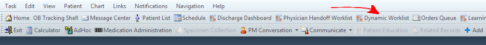
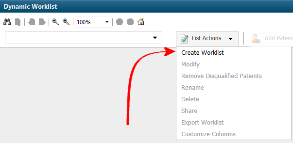
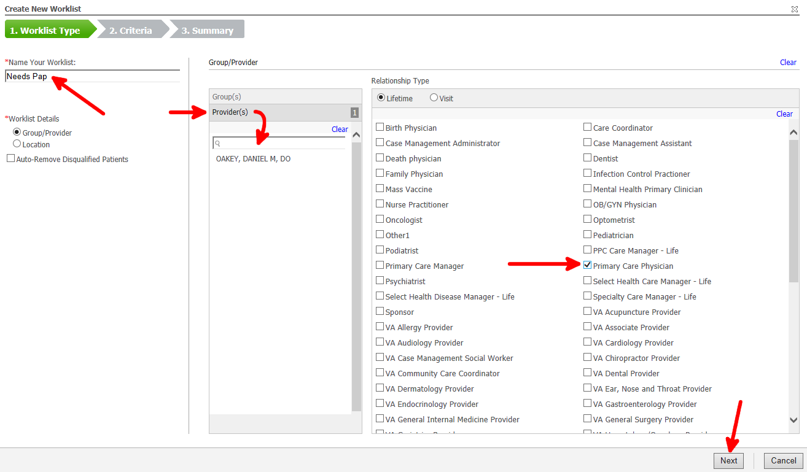
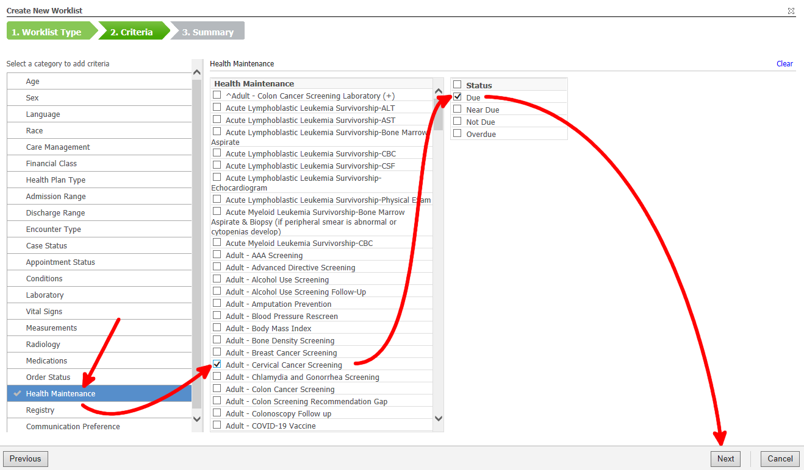

Using the dynamic worklist, you can create a spreadsheet of patients who are empaneled to a provider or a group in the hospital. You can apply filters to this list.
In this example, I'll demonstrate how to create a list of patients empaneled to me that are due for a pap smear. I'll demonstrate how to send a message to all of these patients inviting them to come in for a Pap smear.
Click "Dynamic Worklist"

Click "List Actions", "Create Worklist"

Name the worklist, enter the provider name, set the relationship type, then click "Next"

Edit the filter criteria, then click "Next", then "Finish"

A table will show the patients who fit the filter criteria